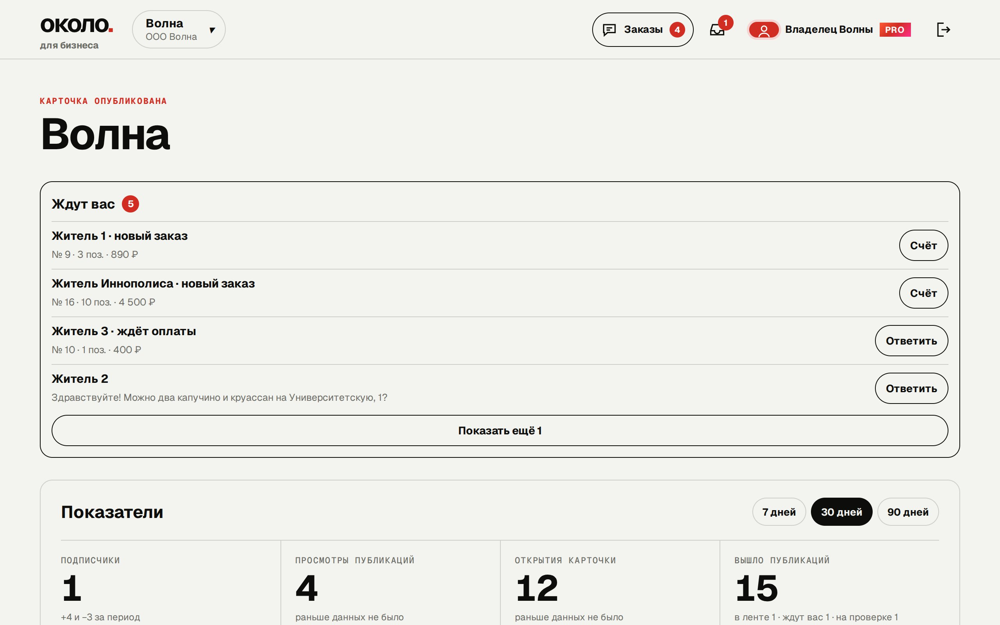

Сменить маршрут
Новые места и любимые адреса.
Места, события и предложения твоего города. Всё, ради чего стоит выйти из дома.
Посмотреть, что внутриСкоро на Android. Начинаем с Иннополиса.
Не ищи по десяткам чатов. Собери свой город в одной ленте.
Новые места и любимые адреса.
События, которые начинаются сегодня.
Категории помогают оставить в ленте нужное.
Примеры возможностей будущего приложения.
Начинаем с Иннополиса.
Листай общую ленту и выбирай категории.
Подпишись — новости любимых мест соберутся отдельно.
Музыка, встречи и новые поводы выйти.
Новое меню уже в ленте.
Пока здесь тихо. Подпишись на место из общей ленты.
Концепция интерфейса
Лента, места, карточка заведения и карта города.


Экраны демо-версии: заведения и публикации на них — примеры.
Около готовится к запуску. Для Android приложение в ближайшее время появится в RuStore, на iPhone Около будет открываться как веб-приложение (PWA) — без магазина. Ссылки появятся здесь.
Да. Приложение для жителей будет бесплатным.
Первым станет Иннополис. Архитектура продукта предусматривает запуск в других городах.
Около — лента города, в которой жители сами подписываются на места рядом.
Описание, адрес, часы работы и меню — в каталоге города, который житель открывает в приложении.
Публикации выходят в общей ленте и у подписчиков заведения. Акцию можно анонсировать заранее.
Житель подписывается сам — и узнаёт о новом без рассылок и чатов.
Владелец выдаёт сотрудникам готовые учётные записи: каждый делает только то, что ему разрешено.
Открывается в браузере — на компьютере и на телефоне.



Экраны тестового кабинета: заведение и обращения на них — примеры.
Владелец оставляет заявку на подключение заведения.
Мы убеждаемся, что заявку подал представитель заведения.
Владелец получает данные для входа, заполняет карточку и раздаёт доступ сотрудникам.
Заведения и сервисы города. Первым городом станет Иннополис.
Жители города в общей ленте и подписчики заведения — в своей. Каждую публикацию перед выходом читает команда Около.
Мы сверяем данные организации и убеждаемся, что заявку подал её представитель. После этого владелец получает доступ в кабинет.
Первый город — Иннополис.
Для жителей — бесплатно.
Заявка подаётся на сайте сервиса.
Первый город — Иннополис.